ARMv8 学习
ARMv8 初步
- ARMv8 定义了两种执行状态，AArch64 和 AArch 32
- AArch64 最多可以在寄存器中传递 8 个参数
- AArch32 最多可以在寄存器中传递 4 个参数
- ARMv8 中，执行发生在 4 个异常级别之一，异常级别决定了特权级别。
| 异常级别 | 解释 |
|---|---|
| EL0 | 普通用户的用户程序 |
| EL1 | 操作系统内核，通常说是有特权的 |
| EL2 | Hypervisor(虚拟机管理程序) |
| EL3 | 底层固件，包括安全监视器 |
- ARMv8 也提供了两种安全状态：安全状态和非安全状态，这种保护使得普通操作系统和受信操作系统可以安全的同时运行在同一操作系统上。
ARMv8 中 EL3 的安全监视器充当普通和安全世界之间切换的网关
AArch 64 异常级别和安全状态组织形式如下

- AArch 32 异常级别和安全状态组织形式如下

- 只能通过改变异常级别来改变执行状态。对异常的处理可能从AArch32更改为AArch64，从异常返回可能从AArch64更改为AArch32。
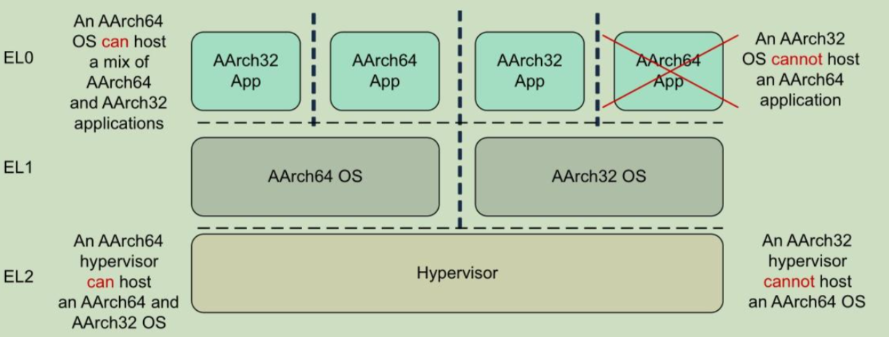
ARMv8 寄存器
通用寄存器
- AArch 64 执行状态提供了 31 x 64 位的通用寄存器，可以在任何时间和所有异常级别访问。每个寄存器是64位宽，它们通常被称为X0-X30寄存器。
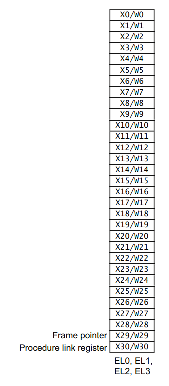
- 每个AArch64 64位通用寄存器(X0-X30)也有一个32位(W0-W30)形式
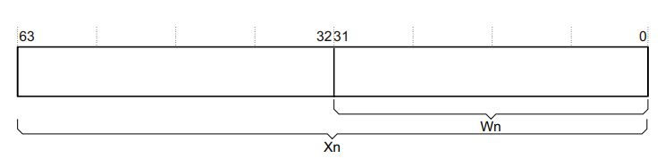
- W寄存器读取时忽略相应X寄存器的高32位,写入W寄存器则将其余高位设置为0.
专用寄存器
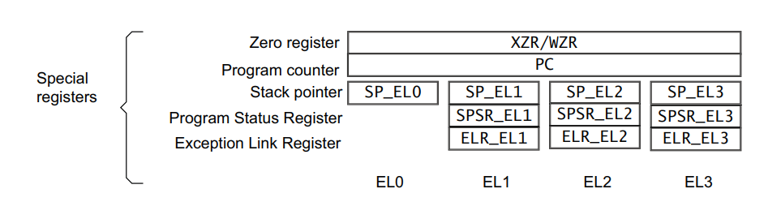
没有真正意义上的 31 号寄存器，很多时候都代表零寄存器，在某些特殊指令中也代表 SP 寄存器。
访问零寄存器时，所有读操作都返回 0 ，所有写操作无效，这点和 MIPS 很像。
当在AArch64中处于非EL0异常级别时，处理器可以使用以下两种寄存器：与异常级别关联的专用64位堆栈指针(SP_ELn)，或者 EL0 的堆栈指针（SP_EL0）
ELR 保存异常返回地址，和 MIPS 中的 EPC 很像
SPSR 当捕获一个异常时，处理器状态存储在相关的Saved Program Status register(SPSR)中，类似于ARMv7中的CPSR。SPSR在捕获异常之前保存ch（处理器状态）的值，并用于在执行异常返回时恢复PSTATE（处理器状态）的值。
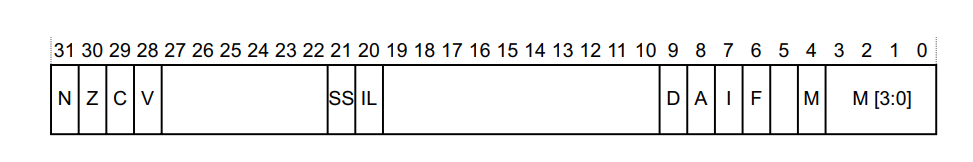
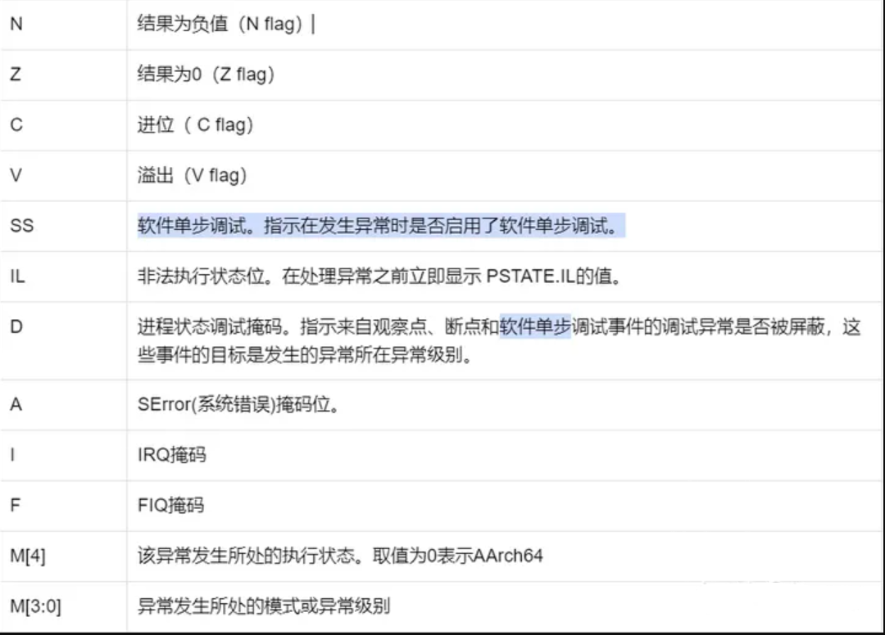
- 在ARMv8中，对SPSR的写入依赖于异常级别。如果在EL1中发生异常，则使用SPSR_EL1。如果在EL2中发生异常，则使用SPSR_EL2，如果在EL3中发生异常，则使用SPSR_EL3。当发生异常时，核心要填充SPSR。
系统寄存器
在AArch64中，系统配置通过系统寄存器进行控制，并使用MSR和MRS指令来获取、更改系统寄存器的值。
寄存器的名字告诉你可以访问它的最低的异常级别，这点与专用寄存器有所差别
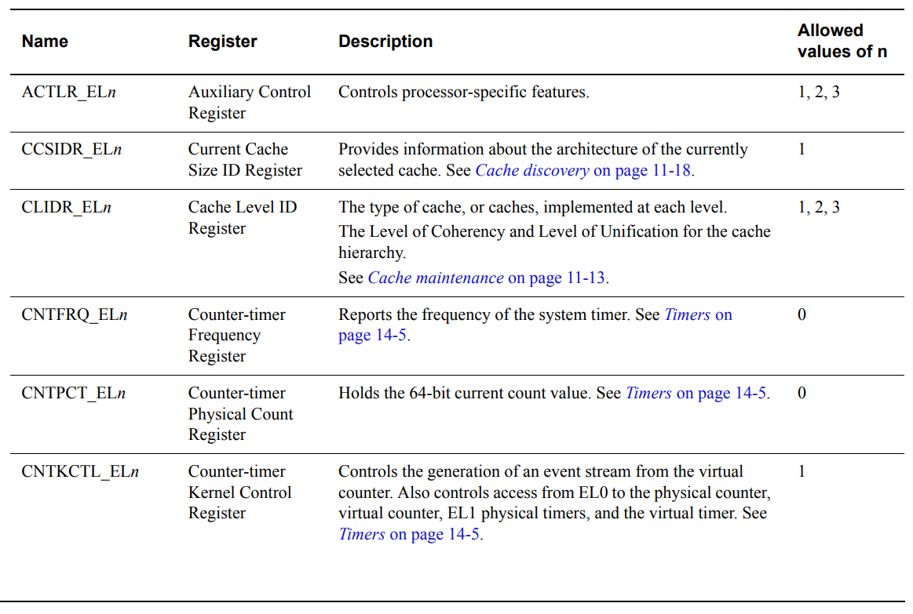
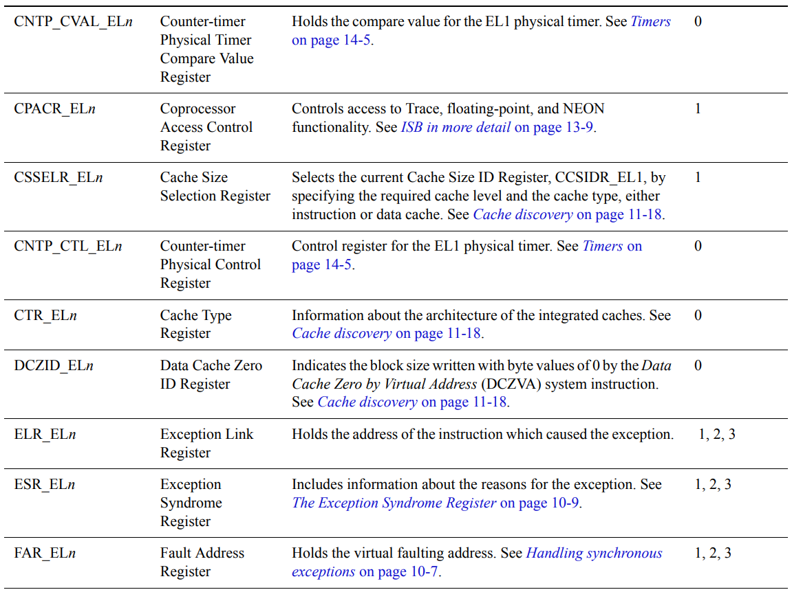
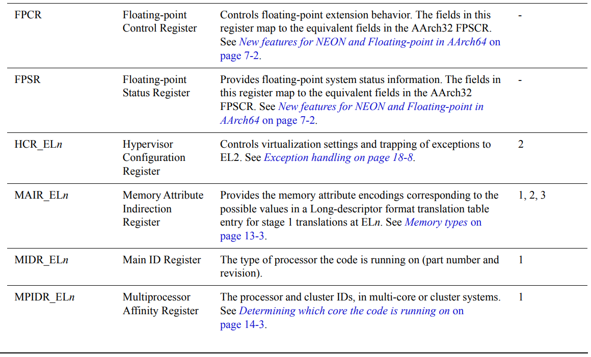
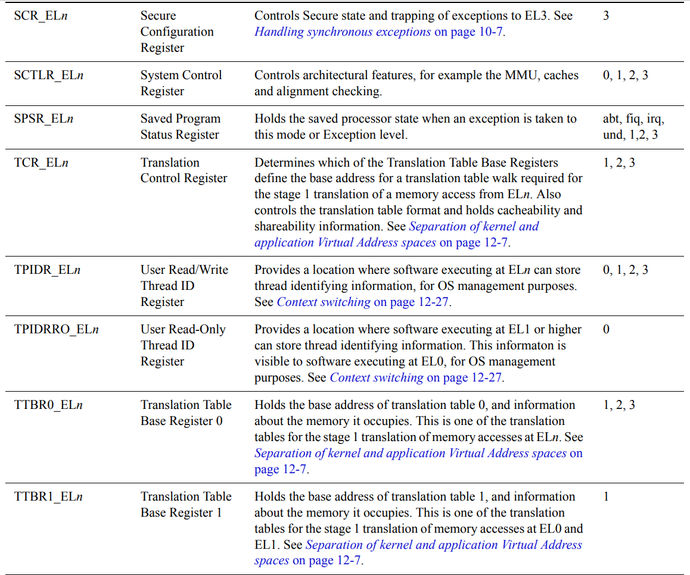
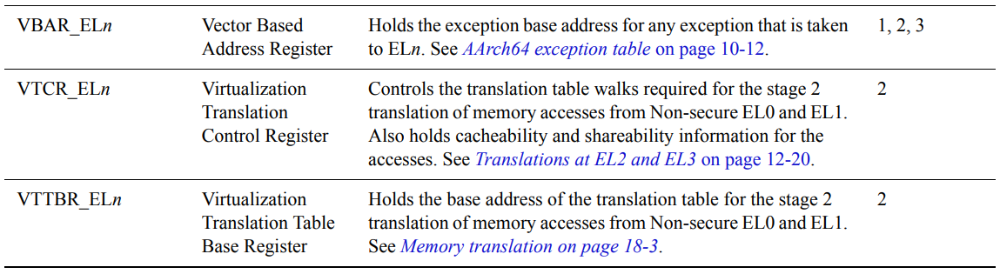
系统控制寄存器
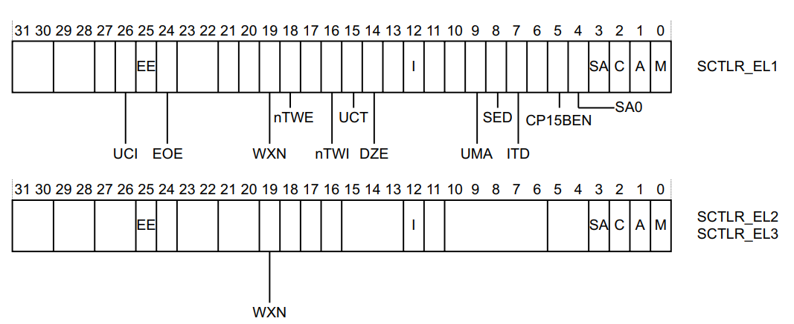
- 并非所有位在EL1以上都可用。每个位代表以下内容
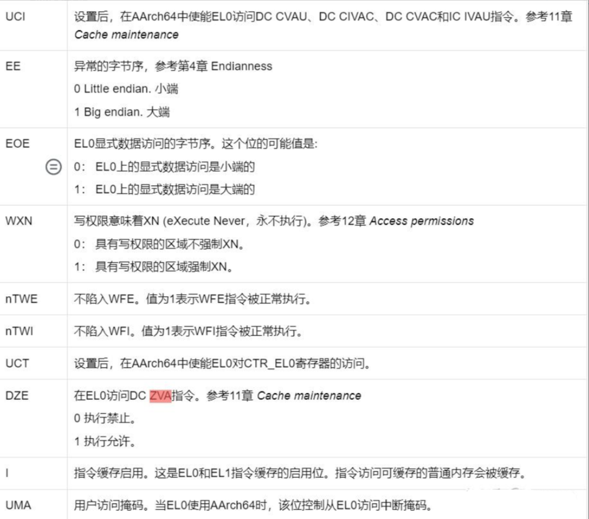
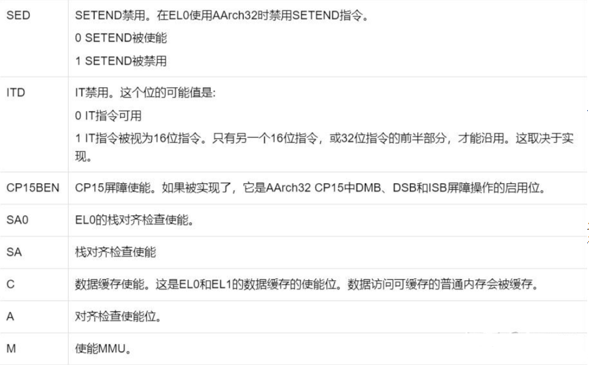
浮点寄存器
- 除了通用寄存器外，ARMv8还有32个128位浮点寄存器，标记为V0-V31。32个寄存器用于保存标量浮点指令的浮点操作数，以及NEON操作的标量和向量操作数。
ARMv8 处理器状态
处理器状态作为字段提供
定义如下
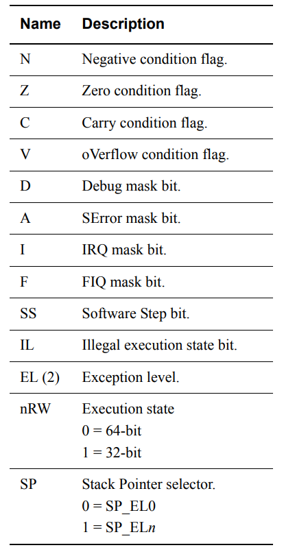
ARMv8 指令集
- 指令集中的指令仍然是 32 位长
数据处理指令
Instruction Rd, Rn, Operand2
- R 代表这里可以是X寄存器，也可以是W寄存器
- D 代表这里是目标寄存器
算术和逻辑运算
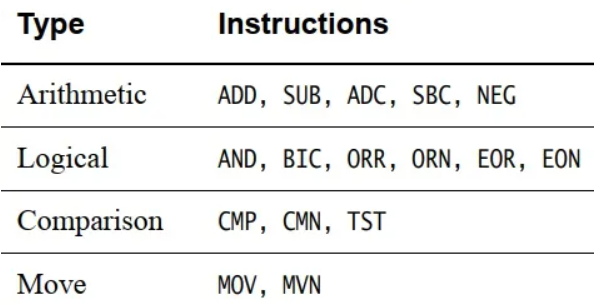
有些指令还带有S后缀，表示该指令设置了标志。表6-1中的说明包括:ADDS、SUBS、ADCS、SBCS、ANDS和BICS。还有其他的标志设置指令，特别是CMP、CMN和TST，但它们没有S后缀，因为它们必然会设置标志。
ADD 加法，SUB 减法，ADC 带进位加法，SBC 带进位减法，NEG 求补
- AND 与运算，BIC 对 Rn 中的值 和 Operand2 值的反码按位进行逻辑“与”运算，ORR 或运算，ORN 对第二个操作数的按位取反后执行或，EOR 异或运算，EON 对第二个操作数的按位取反后执行异或。
- CMP 的比较方式：
op1 - (op2)，CMN 的比较方式：op1 - (-op2)，TST 用来测试某一位或某几位是 0 还是 1。 - MOV 移动值，MON 用它赋值的时候，先按位取反。
乘和除指令
| 指令名 | 解释 |
|---|---|
| MADD | 乘后加 |
| MNEG | 乘后取相反数 |
| MSUB | 乘后减 |
| NUL | 乘 |
| SMADDL | 对 Long 型做有符号的乘加运算 |
| SMNEGL | 对 Long 型做有符号的乘再取相反数运算 |
| SMSUBL | 对 Long 型做有符号的乘减运算 |
| SMULH | 返回高半部分的有符号乘 |
| SMULL | 对 Long 型做有符号的乘运算 |
| UMADDL | 对 Long 型做无符号的乘加运算 |
| UMNEGL | 对 Long 型做无符号的乘再取相反数运算 |
| UMSUBL | 对 Long 型做无符号的乘减运算 |
| UMULH | 返回高半部分的无符号乘 |
| UMULL | 对 Long 型 做无符号的乘运算 |
| SDIV | 有符号的除法 |
| UDIV | 无符号的除法 |
移位操作
| 指令名 | 解释 |
|---|---|
| LSL | 逻辑左移 |
| LSR | 逻辑右移 |
| ASR | 算术右移 |
| ROR | 旋转右移 |
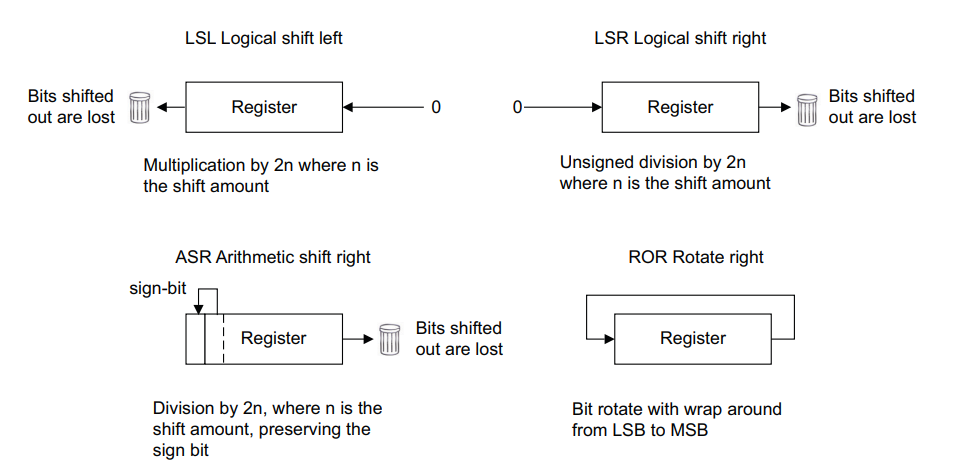
位域和字节操作指令
| 指令名 | 解释 |
|---|---|
| SXTB | 复制最高位将 8 位扩展到 64 位 |
| CLZ | 计算在寄存器中前导零的个数 |
| RBIT | 反转所有位 |
| REV | 反转寄存器的字节顺序 |
| REV16 | 反转寄存器中每个半字的字节顺序 |
| REV32 | 反转寄存器中每个字的字节顺序 |
REV16图解：
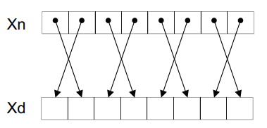
REV32图解：
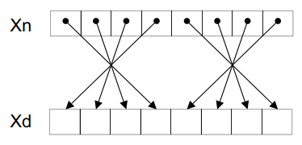